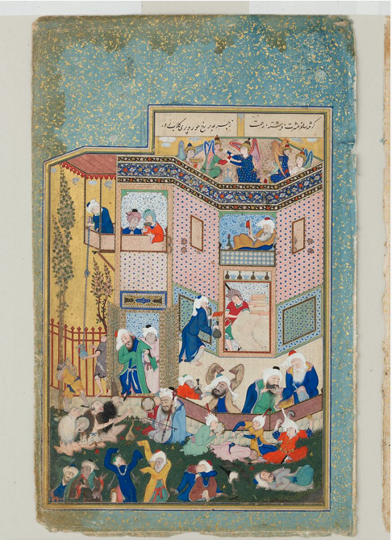

— Allegory of Worldly and Otherworldly Drunkenness, Divan-e-Hafiz
Introduction 🔗
Wine poetry has a long and fascinating history in Urdu, Hindi, Farsi and Arabic. The genre of khamirriya in pre-Islamic Arabia is an early instance of wine imagery and symbolism constituting an entire subgenre of poetry. The genre would take on new meanings with the introduction of Islam in the 7th century. Alongside khamirriya, the Farsi saqinama was developing in Persia, represented in Firdawsi’s Shahanama, Hafiz’s Divan and Khayyam’s rubaiyaat, among other works. A particular characterization of intoxication and wine would then enter Urdu poetry from Farsi during the Mughal empire, and into Hindi through the works of Hairvansh Bacchan. Today we’ll explore the various meanings of intoxication, wine, and adjacent symbology in classical Urdu and Hindi poetry.
Vocabulary of Intoxication 🔗
Wine (sharaab, mai, haala, baada) - the substance of intoxication. An allegory for divine love and the ultimate intoxication (fanaa, the dissolution of the self in face of the divine). Amplifier of love in the worldly sense - between the lover and the beloved, between the individual and the society, etc. Some types:
- Aab e aatish guun/ aab e aatish mizaaj/ baada e ahmari (red wine)
- Afshurda e anguur/ baade e inabii/ sharaab e anguur (grape wine)
- Baada e angbeen (honey wine)
- Baada e nosheen (nectar wine)
- Mai e gulfaam/ mai e gulguun (flower wine/sangria)
- Mai e gulrang (sangria)
- Sabuhi (morning wine)
- Baada e tund (strong wine)
- Baada e saafii (clean wine, wine that goes down easy)
- Sharaab e do aatish (strong liquor, double-distilled)
- Dukht e raaz (daughter of the vine, grape wine)
- Madhuu (spring wine/honey wine)
Goblet, Decanter (saaghar, jaam, miinaa, paimaana) - the holder of the wine. Can refer to physical forms or vessels (body) that carry the wine (spirit)
Wine bearer (saaqi/saaqiya) - the deliverer of wine. The source of the ecstasy - often a stand in for God or the Beloved.
Tavern (maikhana, madhushala, maikada, sharaab-khaana) - the place of drinking. Often alludes to the world (mijaaz) Khum-khaana (distilery)
Ascetic (zaahid) - the ascetic who doesnt drink, the abstinent
Drinker/Drunkard (rind) -
- Sharabi (alcoholic)
- Mai kash (wine-drinker)
Intoxication (nasha, suroor, mast) - different intensities / inflection of drunkenness
Intoxication/Hangover (khumaar)
Bartender (kalaal)
Bitter wine, acid, tears (aab e talakh/ baada e talakh)
Selected Ashaar 🔗
ساقی کی ہر نگاہ پہ بل کھا کے پی گیا
لہروں سے کھیلتا ہوا لہرا کے پی گیا
Saaqi ki har nigah pe bal kha ke pi gayaa
Lehron se khelta hua lehra ke pi gayaa
In awe of every glance of the cup-bearer, I drank
I drank playing with the waves of joy.
اے رحمتِ تمام مری ہر خطا معاف
میں انتہائے شوق میں گھبرا کے پی گیا
Ay rahmat-e-tamam meri har khata maaf
Main intiha-e-shauq mein ghabra ke pi gayaa
O all-merciful! Please forgive all my wrongs
I drank confounded by the extreme desire.
پیتا بغیر اِذن، یہ کب تھی مری مجال
درپردہ چشمِ یار کی شہ پا کے پی گیا
Peta baghair izn, ye kab thi meri majaal
Dar-pardaa chashm-e-yaar ki shah pa ke pi gayaa
I do not dare to drink without permission
but the patronage of veiled eyes of my beloved beckoned.
زاہد یہ میری شوخیِ رندانہ دیکھنا
رحمت کو باتوں باتوں میں بہلا کے پی گیا
Zahid ye meri shokhi-e-rindana dekhnaa
Rehmat ko baaton baaton main bahla ke pi gayaa
O abstinent!Look at the mischievousness of my drinking
I drank by befriending the forgiveness [of God].
— Jigar Moradabadi (Ye jo halka halka suroor hai)
زاہد شراب پینے دے مسجد میں بیٹھ کر
یا وہ جگہ بتا دے جہاں پر خدا نہ ہو
Zāhid sharāb piine de masjid meñ baiTh kar
yā vo jagah batā de jahāñ par ḳhudā na ho
Zaahid let me sit in the mosque and drink
or point me to a place where god does not reside
— Daagh Dhelvi
تیرے شیشے میں مے باقی نہیں ہے
بتا کیا تو مرا ساقی نہیں ہے
سمندر سے ملے پیاسے کو شبنم
بخیلی ہے یہ رزّاقی نہیں ہے
Tere shiishe men mai baqi nahi hai
Bataa kya tu mera saqi nahi hai
Samundar se mile pyase ko shabnam
Bakhili hai ye razzaaqi nahi hai
There is no wine left in your glass
Tell me, aren’t you my Saaqi?
When the thirsty one receives only a drop from the ocean
It’s avarice, not generosity
خیر، تو ساقی سہی لیکن پلائے گا کسے
اب نہ وہ مے کش رہے باقی نہ میخانے رہے
Khair, Tu Saqi Sahi Lekin Pilaye Ga Kise
Ab Na Woh Mai-Kash Rahe Baqi Na Maikhane Rahe
Very well, the cup‐bearer you may be, whom will you serve wine
Now neither those wine‐drinkers nor those taverns did remain
پھر یہ غوغا ہے کہ لا ساقی شرابِ خانہ ساز
دل کے ہنگامے مئے مغرب نے کر ڈالے خموش
Phir Ye Ghogha Hai Ke La Saqi Sharab-e-Khana Saaz
Dil Ke Hangame Mai-e-Maghrib Ne Kar Dale Khamosh
There is clamor again for cup‐bearer to bring the home‐made wine
As the heart’s uproars have been silenced by the West’s wine
میں شاخِ تاک ہوں، مری غزل ہے مرا ثمر
میرے ثمر سے مئے لالہ فام پیدا کر
Main Shakh-e-Taak Hun, Meri Ghazal Hai Mera Samar
Mere Samar Se Mai-e-Lala Faam Paida Kar
My songs are the grapes on the spray of my vine
Distil from their clusters the poppy‐red wine!
— Iqbal
Writing Prompts 🔗
-
Write the beginning of a nazm (or the first couple ashaar of a ghazal) about intoxication. What are the different intensities/kinds of drunkenness? What is the end state of intoxication, and what is lost/achieved?
-
Write the beginning of a nazm (or the first couple ashaar of a ghazal) about wine and associated symbols. We’ve seen that wine can be an allusion to divine love,human love, unity between humans, as a poison, as ecstasy, amongs other meanings. How could these symbols be reimagined or inverted?
Further Resources 🔗
Passed Around By A Wine Cresent: Wine Poetry in the Islamic World